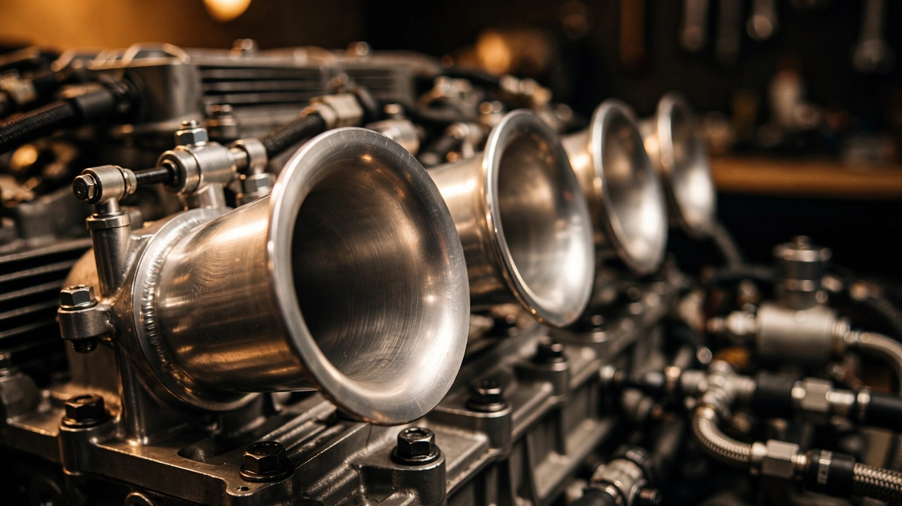

102 Millimeters of Defiance: How Porsche Built a Naturally Aspirated 4.0-Liter Flat-Six That Should Not Exist

A four-liter naturally aspirated engine has no business existing in 2026, and yet here one is. Every major emissions regulation written in the past decade assumes forced induction, with smaller displacement and turbochargers or superchargers to recover the power deficit, and every cost-conscious product planner at every automaker on Earth has internalized that logic so thoroughly that naturally aspirated engines above 2.5 liters have become museum pieces in anything other than trucks. Porsche's own 911 Carrera adopted a turbocharged 3.0-liter flat-six in 2016. Natural aspiration, in the regulatory arithmetic, was finished.
Then Weissach built the 9A2 Evo, on purpose, with new money.
Porsche GT division boss Andreas Preuninger described it plainly at Goodwood: "Actually, it's a bespoke new engine. It's from the 9A2 family and we call it the 'Evo.' We made a new crankcase, new cylinder heads, new pistons, new crankshaft, new rods." Every major reciprocating and structural component is unique to this engine. It shares bore spacing and fundamental architecture with the turbocharged 9A2 in the 911 Carrera, but almost nothing else. This is not an old GT3 unit shoehorned into a cheaper car, and it is not a turbo motor with the snails removed. It is a bespoke naturally aspirated engine purpose-built for cars that Porsche's own accountants would have preferred not to develop.
Why 102 Millimeters Matters
Bore and stroke define an engine's character before anything else happens. At 102.0 mm bore and 81.5 mm stroke, the 9A2 Evo runs a bore-to-stroke ratio of 1.25, which is significantly oversquare with wide pistons and short travel. Two consequences follow for high-RPM operation, and both are non-negotiable for what Porsche wanted this engine to do.
First, shorter stroke reduces mean piston speed at a given RPM. At 7,800 rpm, mean piston speed in the 9A2 Evo is approximately 21.2 meters per second, well below the 25 m/s threshold where cross-plane V8 engines typically encounter bearing and lubrication limits, and comfortably beneath the somewhat higher ceiling that flat-plane cranks and boxer configurations can sustain due to their inherent rotational balance, giving the bearings substantial margin for sustained high-RPM operation. Second, the wider bore allows larger intake and exhaust valves. Larger valves improve volumetric efficiency at high RPM, where valve open time per cycle shrinks and every square millimeter of curtain area counts. With four valves per cylinder and DOHC heads, the 9A2 Evo breathes well enough to produce 99 horsepower per liter without any form of forced induction.
Compare that bore with the turbocharged 9A2 in the 911 Carrera: 102.0 mm bore, 76.4 mm stroke, 3.0 liters. Same bore, different stroke. Porsche stretched the crankshaft throw by 5.1 mm to reach 4.0 liters, which required an entirely new crankshaft, new connecting rods, and new pistons. Stroking an engine is not simply a matter of swapping a crankshaft. Longer throw changes rod angle geometry, increases piston side-loading against the cylinder wall, shifts the balance of primary and secondary vibrations, and demands revised counterweight profiles on every crank web.
Compression at the Knife Edge
At 13.0:1, the 9A2 Evo's compression ratio sits near the practical ceiling for pump gasoline in a naturally aspirated engine. Higher compression extracts more work from each combustion event by expanding the burning gases over a greater volume ratio. Thermal efficiency climbs with compression ratio according to the Otto cycle, and 13.0:1 represents roughly 2 percentage points of thermal efficiency gain over the 9.5:1 ratio used in the turbocharged 9A2. But higher compression also moves the charge closer to its autoignition threshold, risking knock.
Turbocharged engines compress intake air before it enters the cylinder. A turbo motor running 1.25 bar of boost at 9.5:1 geometric compression sees effective in-cylinder pressures far beyond what a 13.0:1 naturally aspirated engine experiences. But the turbo engine has boost pressure as a variable it can reduce. Pull boost, and knock retreats. A naturally aspirated engine at 13.0:1 has no such relief valve. Combustion chamber geometry, fuel injection timing, and intake charge temperature are the only levers, and all three must be controlled precisely across the entire operating envelope from cold start to sustained 7,800 rpm at redline.
This is where the piezo injectors enter.
Crystals Instead of Coils
Conventional direct fuel injectors use electromagnetic solenoids. An electric current energizes a coil, the coil generates a magnetic field, and the field moves a plunger that opens the injector nozzle. This works adequately at moderate engine speeds, but solenoid response time imposes a floor on how quickly the injector can open, deliver fuel, and close. At 7,800 rpm, the crankshaft completes one revolution every 7.7 milliseconds. A four-stroke combustion cycle takes two revolutions, so each cylinder fires every 15.4 milliseconds. Within that window, the injector must deliver precisely metered fuel, possibly in multiple separate pulses, with enough time between pulses for the fuel spray to atomize and mix with incoming air.
Piezo injectors replace the solenoid with a stack of piezoelectric crystals: voltage in and the crystals expand, voltage off and they contract, with no magnetic field to build and no plunger mass to accelerate. Response time drops below 0.1 milliseconds, which is fast enough that Porsche claims these are the first piezo injectors fitted to a high-revving direct-injection engine, and the speed advantage allows the 9A2 Evo to split each combustion event into five separate injection pulses per power stroke.
Five pulses matter for two reasons. At partial load and medium RPM, multiple short injections improve fuel-air homogeneity inside the combustion chamber. Rather than one long spray that risks wetting the cylinder wall (a direct cause of particulate emissions in gasoline direct injection engines), the fuel enters in controlled bursts that atomize more completely. Spray-guided combustion keeps the densest part of the fuel cloud near the spark plug, reducing wall deposition. At full load and high RPM, the multiple-pulse strategy gives the ECU finer control over the combustion phasing, retarding or advancing the center of combustion pressure to manage knock margin without pulling ignition timing across the board.
Fewer particles reaching the exhaust means less work for the gasoline particulate filter downstream, extending its regeneration intervals and reducing the backpressure penalty that all GPFs impose.
Shutting Down Half the Engine
A 4.0-liter naturally aspirated engine cruising at 100 km/h on a highway is catastrophically, absurdly oversized for the task. Pumping losses dominate: each cylinder sucks air past a nearly closed throttle plate, doing negative work on every intake stroke, then compresses and fires a tiny charge that barely keeps the crankshaft turning. A turbo four-cylinder of half the displacement would run at higher load, closer to its peak efficiency island, producing identical wheel torque with substantially less fuel and substantially less guilt about the regulatory spreadsheets that determine whether an engine gets certified at all.
Porsche's answer is Adaptive Cylinder Control. Below 2,500 rpm in the GTS (3,000 rpm in the GT4), and when torque demand falls below approximately 74 lb-ft, the ECU cuts fuel injection to one bank of three cylinders and half the engine goes dark. Instantly, the remaining three cylinders must double their individual output to maintain the same total torque, and each surviving cylinder now operates at a higher specific load, closer to its best brake-specific fuel consumption, while the three deactivated cylinders stop burning fuel entirely.
The alternating-bank strategy is the clever part. Every 20 seconds, the system switches which bank is deactivated. This keeps both catalytic converters at operating temperature by ensuring each one receives exhaust gas half the time. A catalyst that cools below its light-off temperature (typically 250 to 350 degrees Celsius for a modern three-way unit) cannot convert carbon monoxide, hydrocarbons, or nitrogen oxides. Letting one bank go cold while the other runs would produce intermittent emissions spikes every time the cold bank reactivated. Alternating prevents that.
Porsche reports that Adaptive Cylinder Control saves 11 g/km of CO2 in the WLTP combined cycle. That number sounds modest until you realize it was the margin that made this engine certifiable.
Two Engines Wearing the Same Name
Porsche sells "4.0-liter flat-six" across three tiers of the 718 range, but two fundamentally different engines hide behind that description. Mixing them up is common, even among enthusiast press. Getting the distinction right matters.
In the 718 Boxster and Cayman GTS 4.0, plus the 718 Cayman GT4 and 718 Spyder, the engine is the 9A2 Evo described above. It produces 394 horsepower in GTS trim (redline 7,800 rpm) or 414 horsepower in GT4/Spyder trim (redline 8,000 rpm), using a conventional single-throttle-body intake and steel connecting rods. Preuninger explained the logic: "You don't need a titanium conrod set on a car with 414 hp."
In the 718 Cayman GT4 RS and 718 Spyder RS, the engine is the actual 911 GT3 motor, code-named the 9A1. It shares the 4.0-liter displacement and flat-six configuration but is a different engine altogether. Individual throttle bodies replace the single throttle. Titanium connecting rods drop reciprocating mass, allowing a 9,000 rpm redline. Output climbs to 493 horsepower with 331 lb-ft of torque. Mid-engine packaging in the 718 requires longer exhaust headers than the rear-engine 911 GT3, creating additional backpressure that costs approximately 10 horsepower versus the same engine in a 911.
Individual throttle bodies are the hallmark of the GT3 motor, and they reveal why the two engines diverge so completely despite sharing displacement and configuration. Six separate throttle plates, one per cylinder, with no common plenum. Each cylinder draws air through its own dedicated trumpet, eliminating the pressure fluctuations that propagate between cylinders in a shared intake manifold, and throttle response becomes instantaneous in a way that a single-throttle system cannot match because opening one plate feeds one cylinder without stealing airflow from its neighbors. Acoustically, the effect is transformative. Individual throttle bodies produce the GT3 induction howl as air rushes through six separate paths at high velocity. A single throttle body cannot replicate that sound. Physics prevents it.
Dry-Sump and the Mid-Engine Advantage
Both 9A2 Evo and GT3-derived variants use integrated dry-sump lubrication with a demand-controlled oil pump. In a wet-sump system, oil collects in a pan beneath the crankshaft and is drawn upward by a single pickup tube. Under sustained lateral or longitudinal acceleration, oil sloshes away from the pickup, starving the bearings. Track driving, the stated purpose of every GT-badged Porsche, generates exactly those conditions for minutes at a time.
A dry sump uses multiple scavenge pumps to continuously evacuate oil from the crankcase and return it to an external reservoir. Separation from the crankcase lowers the oil level below the crankshaft's rotation plane, reducing windage losses as the crank no longer churns through a pool of oil. In the 718's mid-engine layout, the external reservoir can be mounted low and forward, keeping the oil's center of gravity near the car's own center of mass regardless of cornering forces.
Demand-controlled means the pump varies its output based on engine temperature, RPM, and detected oil pressure, rather than running at full capacity constantly. At highway cruise, the pump delivers minimum flow, reducing parasitic drag on the engine. At 7,800 rpm in a fourth-gear corner, it delivers everything it has.
Firing Order and the Boxer Sound
In a four-stroke flat-six, a cylinder fires every 120 degrees of crankshaft rotation. Six evenly spaced combustion events per two revolutions produce a smooth power delivery with minimal torsional vibration, which is one reason flat-sixes feel mechanically polished at high RPM compared to the loping unevenness of a flat-plane V8 or the throbbing pulse of a big-bore twin.
But the 718's exhaust architecture splits this smoothness into something more interesting. Each bank of three cylinders feeds its own exhaust system, producing two overlapping three-pulse sequences rather than one continuous six-pulse stream. The frequency content reaching the driver's ears includes both the fundamental firing frequency and a strong half-order harmonic from the bank-to-bank phasing offset. Combined with the resonance characteristics of the specific header length required by mid-engine packaging, the result is the flat-six warble that defines the 718's character: not the even howl of an inline-six, not the burble of a cross-plane V8, but something rhythmically off-kilter and immediately recognizable.
A Last Chapter Written on Purpose
Porsche has confirmed that the next-generation 718 will be fully electric, with no combustion option and no hybrid. When the current 982-generation Boxster and Cayman leave production, the 9A2 Evo leaves with them, and there will be no successor, no next evolution of this engine family in a mid-engine Porsche, no future variant with revised cam timing or a few more horsepower for a model-year refresh, because the entire product line that houses this engine will cease to accommodate any engine at all.
Preuninger's comment at Goodwood reads differently now. He said the 9A2 Evo could be used "in the future for other models maybe as well," but nobody took him up on it, and not a single other model adopted the engine.
The 9A2 Evo exists solely for the 718 GTS 4.0, GT4, and Spyder, a bespoke naturally aspirated engine developed for exactly three mid-engine sports cars in a product range that will soon cease to have combustion models at all.
Building a new naturally aspirated 4.0-liter flat-six in an era of downsized turbocharged engines was an act of engineering stubbornness. Certifying it for global emissions compliance using piezo injectors, five-pulse combustion, gasoline particulate filtration, and alternating-bank cylinder deactivation was an act of technical virtuosity that most manufacturers would consider an extravagant waste of development resources for a low-volume sports car.
Whether Porsche's accountants agreed is unknowable from the outside. But the engine exists. It revs to 7,800 rpm on 98 RON pump fuel at 13.0:1 compression without forced induction, passes Euro 6d emissions requirements, and produces a sound that no turbo four-cylinder can approximate. It will not be made again. That finality is precisely what makes the engineering worth studying now, before the production line goes quiet and the only place to hear a 9A2 Evo at full song is behind the wheel of a car someone already bought.
Sources
- Carscoops, "Porsche Could Use Cayman GT4's New Flat-Six In Other Models" (2019), quoting Andreas Preuninger at Goodwood Festival of Speed: 9A2 Evo designation, bespoke crankcase, cylinder heads, pistons, crankshaft, and connecting rods; rationale for not using the GT3 engine ("you don't need a titanium conrod set on a car with 414 hp").
- Autocar, "Under the skin: How Porsche revived flat-six engines for the 718" (2022): piezo fuel injectors as a first for high-revving direct injection, five-injection-pulse strategy, Adaptive Cylinder Control operating windows (1,600-2,500 rpm GTS / 1,600-3,000 rpm GT4), 74 lb-ft torque threshold, alternating-bank strategy with 20-second switching interval, 11 g/km CO2 savings, gasoline particulate filter details.
- DailyRevs, "2026 Porsche 718 Boxster GTS 4.0 982 Technical Specifications": bore 102.0 mm, stroke 81.5 mm, displacement 3,995 cc, compression ratio 13.0:1, 294 kW (400 PS) at 7,000 rpm, 420/430 Nm torque, 7,800 rpm maximum engine speed, integrated dry-sump lubrication with demand-controlled oil pump, variable intake manifold with resonance flap, dual-mass flywheel, engine code DWA.
- Porsche Newsroom, "Pure fun: The 2020 Porsche 718 Cayman GT4 and 718 Spyder" (2019): 414 hp at 7,600 rpm, 309 lb-ft torque, 8,000 rpm capability, six-speed manual standard, front axle from 911 GT3, rear axle bespoke design, 380 mm front / 330 mm rear brake rotors.
- Paultan.org, "Porsche 718 Cayman GT4 RS revealed" (2021): 500 PS / 450 Nm from 911 GT3-derived 4.0L flat-six, 9,000 rpm redline, seven-speed PDK only, 7:04.511 Nürburgring lap time, approximately 10 hp loss versus 911 GT3 due to longer exhaust routing and backpressure.
- Porsche Newsroom, "The new 718 GTS 4.0: Six cylinders, naturally aspirated, manual gearbox" (2020): 394 hp at 7,000 rpm, 309 lb-ft torque, 0-60 mph in 4.3 seconds, PASM sport suspension 20 mm lower, Porsche Torque Vectoring with mechanical limited-slip differential, Sport Chrono standard.